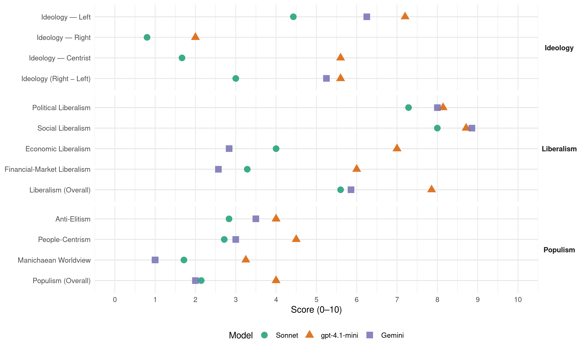

ECOLO (Belgium, 2010)
manifesto_id 21111_201006
Get full text: This site shows derived annotations and short verbatim quotes only. The full manifesto text is © Manifesto Project / WZB — obtain it via manifesto-project.wzb.eu using the manifesto_id above.
Headline scores
| Dimension | Sonnet | gpt-4.1-mini | Gemini |
|---|---|---|---|
| Populism (Overall) | 2.1 | 4.0 | 2.0 |
| Anti-Elitism | 2.8 | 4.0 | 3.5 |
| People-Centrism | 2.7 | 4.5 | 3.0 |
| Manichaean Worldview | 1.7 | 3.2 | 1.0 |
| Ideology (Right − Left) | 3.0 | 5.6 | 5.2 |
| Liberalism (Overall) | 5.6 | 7.9 | 5.9 |
| Political Liberalism | 7.3 | 8.1 | 8.0 |
| Social Liberalism | 8.0 | 8.7 | 8.9 |
| Economic Liberalism | 4.0 | 7.0 | 2.8 |
| Financial-Market Liberalism | 3.3 | 6.0 | 2.6 |
Evidence per dimension
Economic Liberalism
Gemini · score 3.0 · verified · chunk 1
“libre concurrence et du marché”
essentiels comme ceux de la santé ou de l’éducation des dogmes de la libre concurrence et du marché.
Gemini · score 3.0 · verified · chunk 2
“dogmes du marché”
construire une alternative pragmatique et crédible au mode de croissance actuel et aux dogmes du marché. Dans cette optique
Gemini · score 3.0 · verified · chunk 3
“contrôle des prix du gaz”
Ecolo propose dès lors que le contrôle des prix du gaz et de l’électricité soit rétabli
Gemini · score 3.0 · verified · chunk 4
“un mécanisme d’encadrement des loyers soit mis”
Ecolo propose qu’un mécanisme d’encadrement des loyers soit mis en place, en collaboration avec les Régions.
Gemini · score 4.0 · mixed · chunk 5
“entraves à une saine concurrence”
et supprimer les obstacles et entraves à une saine concurrence sur ce marché.
Gemini · score 3.0 · verified · chunk 6
“limiter l’impact des règles de la concurrence”
directivecadre sur les services d’intérêt général qui constitue un outil de choix pour limiter l’impact des règles de la concurrence sur ces services.
Gemini · score 2.0 · verified · chunk 7
“limiter l’impact des règles de la concurrence”
un outil de choix pour limiter l’impact des règles de la concurrence sur ces services
gpt-4.1-mini · score 7.0 · verified · chunk 1
“libéralisation du marché postal, qui doit être effective au 1er janvier 2011”
Au niveau européen, les Verts se sont toujours opposés à la libéralisation du marché postal, qui doit être effective au 1er janvier 2011.
gpt-4.1-mini · score 7.0 · verified · chunk 2
“libéralisation du commerce mondial, respect de normes sociales et environnementales contraignantes”
La Belgique et l’Union européenne doivent intégrer le respect de normes sociales et environnementales contraignantes au sein de leurs accords commerciaux, de libreéchange et d’investissements.
gpt-4.1-mini · score 8.0 · verified · chunk 3
“réductions de cotisations sociales”
Dans notre pays, les aides publiques, aides fiscales ou réductions de cotisations sociales, sont importantes. Ainsi, en 2008, plus de 3 500 000 emplois ont bénéficié de réductions de cotisations, ce qui représente un budget annuel de presque 6 milliards d’ €.
gpt-4.1-mini · score 6.0 · verified · chunk 4
“marché, concurrence, entreprise, fiscalité, commerce, régulation”
marché, concurrence, entreprise, fiscalité, commerce, régulation, privatisation, ou termes liés à la politique économique mentionnés dans le texte.
gpt-4.1-mini · score 7.0 · verified · chunk 5
“rendre notre système fiscal plus équitable en faisant participer tous les revenus”
Ces différentes mesures s’inscrivent en outre dans la volonté de rendre notre système fiscal plus équitable en faisant participer tous les revenus (et pas seulement ceux du travail) au financement des services collectifs76 . Rendre la fiscalité plus verte et plus juste Ecolo propose d’opérer un transfert fiscal partiel du prélèvement sur le travail vers les comportements polluants.
gpt-4.1-mini · score 7.0 · verified · chunk 6
“une harmonisation fiscale”
Une harmonisation fiscale Si des finances publiques équilibrées constituent une condition de la stabilité économique, on ne peut, comme le font tant la Commission que la Banque Centrale Européenne (BCE), se borner à travailler sur le plan des dépenses : le volet des recettes est tout aussi essentiel. Qu’il s’agisse de la mise en place d’une taxe sur les transactions financières, d’une contribution spéciale du secteur bancaire (bank levy), de la mise en place d’une assiette fiscale commune consolidée accompagnée d’un taux plancher d’impôts aux sociétés, ou encore de la lutte contre l’évasion fiscale, seule une approche commune permettra à chacun des 27 Etats membres de retrouver les moyens de ses politiques et d’assurer le maintien de la cohésion sociale.
gpt-4.1-mini · score 7.0 · verified · chunk 7
“règles de la concurrence sur ces services”
…directivecadre sur les services d’intérêt général qui constitue un outil de choix pour limiter l’impact des règles de la concurrence sur ces services. Des moyens propres renforcés pour l’Union européenne Il faut observer…
Sonnet · score 4.0 · verified · chunk 1
“protéger des services publics essentiels”
le combat doit donc se poursuivre pour protéger des services publics essentiels comme ceux de la santé ou de l’éducation des dogmes de la libre concurrence et du marché.
Sonnet · score 4.0 · verified · chunk 2
“encadrer et de réguler la finance et l’économie”
Il s’agit d’investir dans l’avenir, d’orienter le développement économique vers le durable et la prospérité, d’encadrer et de réguler la finance et l’économie, et d’assurer une juste distribution et redistribution des richesses créées
Sonnet · score 4.0 · mixed · chunk 3
“conditionner ces aides publiques à la création réelle d’emplois”
Ecolo entend conditionner ces aides publiques à la création réelle d’emplois. Par ailleurs, Ecolo propose également que certaines aides publiques ciblées permettent d’engager les entreprises dans le développement durable
Sonnet · score 4.0 · mixed · chunk 4
“régulation du marché locatif privé”
Ecolo axe ses priorités en matière de logement sur une régulation du marché locatif privé, une augmentation du parc de logements à prix modérés
Sonnet · score 4.0 · mixed · chunk 5
“régulation des marchés agricoles et alimentaires”
une régulation des marchés agricoles et alimentaires bien différente des actuelles pratiques de renforcement du libre-échange est nécessaire. L’agriculture doit pouvoir être considérée par l’OMC comme un secteur spécifique
Sonnet · score 5.0 · mixed · chunk 6
“stimulation et régulation des activités économiques”
éducation, culture, réduction des inégalités, emploi et logement, aménagement du territoire, stimulation et régulation des activités économiques dans l’intérêt collectif
Sonnet · score 4.0 · verified · chunk 7
“moratoire sur la conclusion de nouveaux accords de libre-échange”
fixer un moratoire sur la conclusion de nouveaux accords de libre-échange qui sera levé lorsque des accords multilatéraux et bilatéraux auront intégré des normes sociales et environnementales contraignantes
Financial-Market Liberalism
Gemini · score 4.0 · verified · chunk 1
“calculs actuariels, des différences entre”
interdire, au niveau du second pilier, aux assureurs de tenir compte, dans leurs calculs actuariels, des différences entre l’espérance de vie
Gemini · score 2.0 · verified · chunk 2
“séparation stricte des métiers bancaires”
il faut affirmer à nouveau un principe fondamental, celui de la séparation stricte des métiers bancaires. Une des réponses
Gemini · score 3.0 · verified · chunk 3
“placements réalisés par ces fonds”
une meilleure régulation et orientation des placements réalisés par ces fonds de pension. Des règles prudentielles
Gemini · score 2.0 · verified · chunk 4
“interdire à toute institution financière belge toute transaction”
Ecolo préconise d’interdire à toute institution financière belge toute transaction financière de et vers les paradis fiscaux
Gemini · score 3.0 · verified · chunk 5
“taxer les opérations boursières spéculatives”
mettre à contribution les plusvalues boursières et de taxer les opérations boursières spéculatives. Ces différentes mesures s’inscrivent
Gemini · score 2.0 · verified · chunk 6
“régulation forte des marchés financiers”
Une régulation forte des marchés financiers La mise en place d’un cadre régulateur
Gemini · score 2.0 · verified · chunk 7
“réformes structurelles des marchés financiers”
paradis fiscaux et règlementaires ; réformes structurelles des marchés financiers de manière à ce que les banques
gpt-4.1-mini · score 7.0 · verified · chunk 2
“protéger l’épargnant, renforcer la solvabilité, séparer les métiers bancaires”
Ecolo formule 5 propositions prioritaires pour concrétiser rapidement cette nécessaire régulation. Séparer les métiers bancaires, Renforcer la solvabilité de manière contracyclique, Protéger l’épargnant.
gpt-4.1-mini · score 7.0 · verified · chunk 3
“renforcer le pouvoir de la Commission de Régulation de l’Électricité et du Gaz”
Ecolo a déposé une proposition de loi afin de renforcer le pouvoir de la Commission de Régulation de l’Électricité et du Gaz (CREG), pour qu’elle soit en mesure d’exercer un réel contrôle des prix, ce qui est insuffisamment le cas actuellement.
gpt-4.1-mini · score 5.0 · verified · chunk 4
“fonds de pension, placements, régulation prudentielle, finance”
fonds de pension, placements, régulation prudentielle, finance, banque, capital, crédit, investissement, marché financier, ou termes liés au système financier mentionnés dans le texte.
gpt-4.1-mini · score 6.0 · verified · chunk 5
“financement des services collectifs”
Ces différentes mesures s’inscrivent en outre dans la volonté de rendre notre système fiscal plus équitable en faisant participer tous les revenus (et pas seulement ceux du travail) au financement des services collectifs76 . Rendre la fiscalité plus verte et plus juste Ecolo propose d’opérer un transfert fiscal partiel du prélèvement sur le travail vers les comportements polluants.
gpt-4.1-mini · score 6.0 · verified · chunk 6
“une régulation forte des marchés financiers”
La mise en place d’un cadre régulateur européen susceptible de préserver le bien public qu’est la stabilité financière passe par la capacité de : prévenir avant de guérir, en pénalisant la spéculation et, de manière générale, les externalités négatives produites par les marchés financiers sur base du principe « pollueur payeur » (taxe européenne sur les transactions financières ; taxe progressive sur le secteur bancaire en fonction de la taille de l’institution et hors dépôts, ciblant l’endettement excessif à court terme; supervision commune et normes prudentielles renforcées visant l’ensemble des acteurs, instruments et marchés financiers, et en particulier le shadow banking system, les fonds spéculatifs/alternatifs et les produits dérivés et les flux des capitaux de et vers les paradis fiscaux et règlementaires ; réformes structurelles des marchés financiers de manière à ce que les banques renouent avec leur rôle traditionnel de collecte de l’épargne et d’octroi de crédits à l’économie réelle) ;
gpt-4.1-mini · score 5.0 · verified · chunk 7
“réformes structurelles des marchés financiers de manière à ce que les banques renouent avec leur rôle traditionnel”
marchés financiers, et en particulier le shadow banking system, les fonds spéculatifs/alternatifs et les produits dérivés et les flux des capitaux de et vers les paradis fiscaux et règlementaires ; réformes structurelles des marchés financiers de manière à ce que les banques renouent avec leur rôle traditionnel de collecte de l’épargne et d’octroi de crédits à l’économie réelle) ; 97 Pour toutes nos propositions concernant l’Union européenne…
Sonnet · score 4.0 · verified · chunk 1
“accès plus difficile au crédit”
Les activités indépendantes des femmes sont généralement plus restreintes, avec moins de capital et un accès plus difficile au crédit.
Sonnet · score 3.0 · verified · chunk 2
“taxe sur les opérations boursières”
Il est urgent d’introduire une taxe sur les opérations boursières (pas uniquement la spéculation monétaire). L’objectif est ici de décourager, par la fiscalité, les opérations spéculatives sur les titres et les monnaies
Sonnet · score 3.0 · verified · chunk 3
“plafonner les taux d’intérêt usuriers”
Ecolo propose dès lors de plafonner les taux d’intérêt usuriers, en limitant par une loi le pourcentage maximum de frais annuels pour tous les crédits à la consommation
Sonnet · score 3.0 · verified · chunk 4
“taxer les opérations boursières spéculatives”
Ecolo propose de mettre à contribution les plusvalues boursières et de taxer les opérations boursières spéculatives. Ces différentes mesures s’inscrivent en outre dans la volonté
Sonnet · score 3.0 · verified · chunk 5
“fin de l’utilisation fiscale du secret bancaire”
La mise en œuvre d’un tel impôt irait de pair avec la fin de l’utilisation fiscale du secret bancaire individuel ou se réaliserait via un prélèvement à la source, par les banques.
Sonnet · score 4.0 · verified · chunk 6
“taxe sur les transactions financières”
Qu’il s’agisse de la mise en place d’une taxe sur les transactions financières, d’une contribution spéciale du secteur bancaire (bank levy)
Sonnet · score 3.0 · verified · chunk 7
“taxation des flux financiers”
l’introduction d’un ensemble de dispositifs de taxation des flux financiers comme outils de redistribution des richesses globales et de stabilisation des flux spéculatifs
Political Liberalism
Gemini · score 8.0 · verified · chunk 1
“légitimité de l’Etat de droit repose”
C’est pourquoi la légitimité de l’Etat de droit repose sur la participation des citoyennes.
Gemini · score 8.0 · verified · chunk 2
“débat au sein du Parlement fédéral”
Ecolo veut porter un large débat au sein du Parlement fédéral sur l’utilisation par les TIC des données personnelles.
Gemini · score 8.0 · verified · chunk 3
“droit individuel du travailleur”
Ecolo est en effet attaché au principe du droit individuel du travailleur à la formation et au dispositif
Gemini · score 8.0 · verified · chunk 4
“droit pour tous à un logement décent”
La Constitution proclame, en son article 23, le droit pour tous à un logement décent. Cette reconnaissance constitutionnelle
Gemini · score 8.0 · verified · chunk 5
“garant des libertés et des droits”
tiers pouvoir, régulateur de la vie sociale, garant des libertés et des droits de chacune. La Justice est au cœur
Gemini · score 8.0 · verified · chunk 6
“principes fondamentaux de l’Etat de droit”
magistrat fautif. L’intervention de juristes non magistrats peut être une solution mais les principes fondamentaux de l’Etat de droit que sont l’inamovibilité
Gemini · score 8.0 · verified · chunk 7
“un contrôle démocratique accru du Parlement”
Ecolo demande notamment un contrôle démocratique accru du Parlement sur la politique étrangère et de défense
gpt-4.1-mini · score 8.0 · verified · chunk 1
“la démocratie exprime la conviction fondamentale selon laquelle les hommes et les femmes appartiennent à une communauté humaine”
La démocratie exprime la conviction fondamentale selon laquelle les hommes et les femmes appartiennent à une communauté humaine qui les constitue égaux, en dépit des inégalités de conditions.
gpt-4.1-mini · score 8.0 · verified · chunk 2
“le droit de partager, le droit de protection de la vie privée, la liberté d’expression”
L’ère des technologies de l’information et de la communication (TIC) ouvre un potentiel créatif et participatif infini : création de contenus, interactivité, échanges planétaires, accès à l’information et aux contenus culturels représentent de fabuleux leviers d’émancipation sociale et de liberté d’expression.
gpt-4.1-mini · score 8.0 · verified · chunk 3
“le système de sécurité sociale est, et doit rester, un système collectif public”
ole système de sécurité sociale est, et doit rester, un système collectif public ; le renforcement que nous portons doit s’inscrire dans ce cadre et non se développer par la voie de la privatisation de certains secteurs ; ole principe historique d’une gestion paritaire de la sécurité sociale entre partenaires sociaux doit se voir conforter ; nos propositions en matière de refinancement de la sécurité sociale sont des outils qui permettront d’éviter de mettre les partenaires sociaux systématiquement en position de demande et de dépendance visàvis du gouvernement ; ola sécurité sociale doit rester fédérale dans son financement et dans ses mécanismes de couverture ;
gpt-4.1-mini · score 8.0 · verified · chunk 4
“la démocratie, les droits, élections, cours, médias”
la démocratie, les droits, élections, cours, médias, gouvernement, parlement, ou un terme institutionnel politique apparent dans le texte.
gpt-4.1-mini · score 8.0 · verified · chunk 5
“rendre à la Justice son rôle de tiers pouvoir, régulateur de la vie sociale”
Ecolo entend rendre à la Justice son rôle de tiers pouvoir, régulateur de la vie sociale, garant des libertés et des droits de chacune. La Justice est au cœur des attentes des citoyennes.
gpt-4.1-mini · score 8.0 · verified · chunk 6
“le respect universel des libertés fondamentales”
Dans un monde globalisé, les effets néfastes sur les plans économique, social, environnemental ou culturel des politiques de libéralisation et de dérégulation menées à l’intérieur des Etats et entre les Etats, conjugués à l’absence de réelles politiques de prévention des conflits et aux carences de la communauté internationale en matière de rétablissement de la paix sont à l’origine de situations désastreuses. Dans ce contexte, Ecolo entend faire avancer sa vision de la gouvernance européenne et mondiale et de la sécurité internationale qui : ofonde ses principes sur le respect universel des libertés fondamentales et la conquête des droits sociaux, économiques, culturels et environnementaux ; ose base sur un système économique international au service de l’humain;
gpt-4.1-mini · score 9.0 · verified · chunk 7
“le Parlement européen est progressivement devenu colégislateur”
…des politiques. Parallèlement au développement de ces instruments, le Parlement européen est progressivement devenu colégislateur d’une partie importante de ces politiques. Les dérives sécuritaires…
Sonnet · score 8.0 · verified · chunk 1
“compléter la démocratie représentative”
il est donc nécessaire de compléter la démocratie représentative, reposant sur la désignation de mandataires élus par les citoyens, par des mécanismes de participation
Sonnet · score 7.0 · verified · chunk 2
“lacune démocratique afin que la société”
Il est urgent de combler cette lacune démocratique afin que la société de l’information ne se transforme pas en outil de restriction de la vie privée et de la liberté d’expression.
Sonnet · score 7.0 · verified · chunk 3
“indépendance de la recherche publique”
Ecolo défend le principe de l’indépendance de la recherche publique. Les résultats des recherches menées dans nos pays pour lutter contre le changement climatique
Sonnet · score 7.0 · verified · chunk 4
“contrôle du Parlement (avec l’appui de la Cour des Comptes)”
ne peuvent être utilisées que sous le contrôle du Parlement (avec l’appui de la Cour des Comptes) et dans la plus grande transparence
Sonnet · score 7.0 · verified · chunk 5
“l’inamovibilité et l’indépendance des juges”
les principes fondamentaux de l’Etat de droit que sont l’inamovibilité et l’indépendance des juges, doivent naturellement rester garantis.
Sonnet · score 8.0 · verified · chunk 6
“principes fondamentaux de l’Etat de droit”
les principes fondamentaux de l’Etat de droit que sont l’inamovibilité et l’indépendance des juges, doivent naturellement rester garantis
Sonnet · score 7.0 · verified · chunk 7
“démocratisation du Conseil de sécurité”
doit notamment se baser sur une démocratisation du Conseil de sécurité (fin des droits de veto et élargissement à de nouveaux Etats), une participation accrue de la société civile
Liberalism (Overall)
Gemini · score 6.0 · verified · chunk 1
“légitimité de l’Etat de droit repose”
C’est pourquoi la légitimité de l’Etat de droit repose sur la participation des citoyennes.
Gemini · score 6.0 · verified · chunk 2
“l’égalité de traitement entre hommes et femmes”
interdisent toute discrimination de salaire sur le genre et exigent l’égalité de traitement entre hommes et femmes. Mais la réalité
Gemini · score 6.0 · verified · chunk 3
“droit individuel du travailleur”
Ecolo est en effet attaché au principe du droit individuel du travailleur à la formation et au dispositif
Gemini · score 6.0 · verified · chunk 4
“respect des droits humains de toutes les personnes”
sans plus tarder afin d’assurer le respect des droits humains de toutes les personnes en situation de handicap.
Gemini · score 6.0 · verified · chunk 5
“garant des libertés et des droits”
tiers pouvoir, régulateur de la vie sociale, garant des libertés et des droits de chacune. La Justice est au cœur
Gemini · score 6.0 · verified · chunk 6
“principes fondamentaux de l’Etat de droit”
magistrat fautif. L’intervention de juristes non magistrats peut être une solution mais les principes fondamentaux de l’Etat de droit que sont l’inamovibilité
Gemini · score 5.0 · verified · chunk 7
“respect des droits de l’Homme”
les violations des droits de l’Homme, le commerce équitable
gpt-4.1-mini · score 8.0 · verified · chunk 1
“La démocratie exprime la conviction fondamentale selon laquelle les hommes et les femmes appartiennent à une communauté humaine”
La démocratie exprime la conviction fondamentale selon laquelle les hommes et les femmes appartiennent à une communauté humaine qui les constitue égaux, en dépit des inégalités de conditions.
gpt-4.1-mini · score 8.0 · verified · chunk 2
“interdissent toute discrimination de salaire sur le genre et exigent l’égalité de traitement entre hommes et femmes”
Depuis, des lois9 interdisent toute discrimination de salaire sur le genre et exigent l’égalité de traitement entre hommes et femmes. Mais la réalité est tout autre : les écarts salariaux perdurent, et il existe une série de discriminations autres sur le marché du travail.
gpt-4.1-mini · score 8.0 · verified · chunk 3
“le système de sécurité sociale est, et doit rester, un système collectif public”
ole système de sécurité sociale est, et doit rester, un système collectif public ; le renforcement que nous portons doit s’inscrire dans ce cadre et non se développer par la voie de la privatisation de certains secteurs ; ole principe historique d’une gestion paritaire de la sécurité sociale entre partenaires sociaux doit se voir conforter ; nos propositions en matière de refinancement de la sécurité sociale sont des outils qui permettront d’éviter de mettre les partenaires sociaux systématiquement en position de demande et de dépendance visàvis du gouvernement ; ola sécurité sociale doit rester fédérale dans son financement et dans ses mécanismes de couverture ;
gpt-4.1-mini · score 7.0 · verified · chunk 4
“la démocratie, les droits, élections, cours, médias”
la démocratie, les droits, élections, cours, médias, gouvernement, parlement, ou un terme institutionnel politique apparent dans le texte.
gpt-4.1-mini · score 8.0 · verified · chunk 5
“rendre à la Justice son rôle de tiers pouvoir, régulateur de la vie sociale”
Ecolo entend rendre à la Justice son rôle de tiers pouvoir, régulateur de la vie sociale, garant des libertés et des droits de chacune. La Justice est au cœur des attentes des citoyennes.
gpt-4.1-mini · score 8.0 · verified · chunk 6
“le respect universel des libertés fondamentales”
Dans un monde globalisé, les effets néfastes sur les plans économique, social, environnemental ou culturel des politiques de libéralisation et de dérégulation menées à l’intérieur des Etats et entre les Etats, conjugués à l’absence de réelles politiques de prévention des conflits et aux carences de la communauté internationale en matière de rétablissement de la paix sont à l’origine de situations désastreuses. Dans ce contexte, Ecolo entend faire avancer sa vision de la gouvernance européenne et mondiale et de la sécurité internationale qui : ofonde ses principes sur le respect universel des libertés fondamentales et la conquête des droits sociaux, économiques, culturels et environnementaux ; ose base sur un système économique international au service de l’humain;
gpt-4.1-mini · score 8.0 · verified · chunk 7
“le Parlement européen est progressivement devenu colégislateur”
…des politiques. Parallèlement au développement de ces instruments, le Parlement européen est progressivement devenu colégislateur d’une partie importante de ces politiques. Les dérives sécuritaires…
Sonnet · score 6.0 · verified · chunk 1
“compléter la démocratie représentative”
il est donc nécessaire de compléter la démocratie représentative, reposant sur la désignation de mandataires élus par les citoyens, par des mécanismes de participation
Sonnet · score 5.0 · verified · chunk 2
“discrimination de salaire sur le genre”
des lois interdisent toute discrimination de salaire sur le genre et exigent l’égalité de traitement entre hommes et femmes. Mais la réalité est tout autre : les écarts salariaux perdurent
Sonnet · score 5.0 · mixed · chunk 3
“lutte contre les discriminations à l’embauche”
la lutte contre les discriminations à l’embauche et/ou durant la carrière que subissent les femmes, les travailleurs âgés, les personnes handicapées
Sonnet · score 5.0 · verified · chunk 4
“rendre notre système fiscal plus équitable”
Ces différentes mesures s’inscrivent en outre dans la volonté de rendre notre système fiscal plus équitable en faisant participer tous les revenus
Sonnet · score 5.0 · mixed · chunk 5
“l’inamovibilité et l’indépendance des juges”
les principes fondamentaux de l’Etat de droit que sont l’inamovibilité et l’indépendance des juges, doivent naturellement rester garantis.
Sonnet · score 7.0 · verified · chunk 6
“respect universel des libertés fondamentales”
fonde ses principes sur le respect universel des libertés fondamentales et la conquête des droits sociaux, économiques, culturels et environnementaux
Sonnet · score 5.0 · verified · chunk 7
“renforçant les pouvoirs de contrôle et d’intervention”
en renforçant les pouvoirs de contrôle et d’intervention des autorités nationales et des futures autorités européennes de supervision, y compris par la possibilité d’interdire
Anti-Elitism
Gemini · score 3.0 · verified · chunk 2
“les politiques actuelles nous mènent”
Pour sortir de ces crises et des impasses auxquelles les politiques actuelles nous mènent, Ecolo propose de mobiliser
Gemini · score 4.0 · verified · chunk 4
“laisseraller du Gouvernement violet et du Gouvernement sortant”
crise financière mais surtout, avant cela, du laisseraller du Gouvernement violet et du Gouvernement sortant. Cette politique n’est pas tenable
Gemini · score 4.0 · verified · chunk 5
“pour flatter leur électorat”
une réforme fiscale à la baisse, pour flatter leur électorat ; le lendemain, les mêmes sont obligés
Gemini · score 3.0 · verified · chunk 6
“manipulation du sentiment d’insécurité par certains politiques”
La manipulation du sentiment d’insécurité par certains politiques, surfant sur l’émotion et l’angoisse
gpt-4.1-mini · score 3.0 · verified · chunk 1
“l’instabilité politique, la chute du Gouvernement et le chaos institutionnel”
L’instabilité politique, la chute du Gouvernement et le chaos institutionnel dans lequel elle a pris corps ont aussi montré la nécessité d’ouvrir un large débat sur l’avenir de nos institutions.
gpt-4.1-mini · score 5.0 · mixed · chunk 3
“les intérêts notionnels, par exemple, profitent principalement aux multinationales”
Or, trop souvent pour le moment, certaines de ces aides constituent des effets d’aubaine et menacent les recettes de la sécurité sociale. Les intérêts notionnels, par exemple, profitent principalement aux multinationales ou à des grandes entreprises, capables de mobiliser des capitaux importants, sans offrir d’avantages substantiels aux acteurs de l’économie réelle, les PME, les TPE ou les entreprises qui investissent dans la recherche et dans la formation de leurs travailleurs.
gpt-4.1-mini · score 5.0 · verified · chunk 4
“du laisseraller du Gouvernement violet et du Gouvernement sortant”
la crise financière mais surtout, avant cela, du laisseraller du Gouvernement violet et du Gouvernement sortant. Cette politique n’est pas tenable et menace à terme la soutenabilité budgétaire des politiques publiques.
gpt-4.1-mini · score 6.0 · verified · chunk 5
“faire participer tous les revenus (et pas seulement ceux du travail)”
Ces différentes mesures s’inscrivent en outre dans la volonté de rendre notre système fiscal plus équitable en faisant participer tous les revenus (et pas seulement ceux du travail) au financement des services collectifs76 . Rendre la fiscalité plus verte et plus juste Ecolo propose d’opérer un transfert fiscal partiel du prélèvement sur le travail vers les comportements polluants.
gpt-4.1-mini · score 2.0 · verified · chunk 6
“la manipulation du sentiment d’insécurité par certains politiques”
Travailler à des solutions réalistes, c’est parfois dépasser « l’émocratie », entendre les policiers, le parquet, les acteurs locaux, les citoyens, consulter des criminologues. La manipulation du sentiment d’insécurité par certains politiques, surfant sur l’émotion et l’angoisse légitime de la population évite d’aborder d’autres facteurs d’insécurité.
Sonnet · score 2.0 · verified · chunk 1
“abus et dysfonctionnements qui ont émaillé l’actualité”
Les abus et dysfonctionnements qui ont émaillé l’actualité durant ces dernières années, en particulier en Wallonie, ont renforcé ce sentiment.
Sonnet · score 3.0 · verified · chunk 3
“profitent principalement aux multinationales ou à des grandes entreprises”
Les intérêts notionnels, par exemple, profitent principalement aux multinationales ou à des grandes entreprises, capables de mobiliser des capitaux importants, sans offrir d’avantages substantiels aux acteurs de l’économie réelle
Sonnet · score 3.0 · verified · chunk 4
“laisseraller du Gouvernement violet et du Gouvernement sortant”
compte tenu de l’impact de la crise financière mais surtout, avant cela, du laisseraller du Gouvernement violet et du Gouvernement sortant. Cette politique n’est pas tenable
Sonnet · score 3.0 · verified · chunk 5
“concentration du pouvoir au sein de quelques entreprises transnationales”
surproduction pour les uns, famine pour les autres, brusque augmentation puis effondrement des prix, concentration du pouvoir au sein de quelques entreprises transnationales, qualité nutritionnelle des produits en baisse
Sonnet · score 3.0 · verified · chunk 6
“manipulation du sentiment d’insécurité par certains politiques”
La manipulation du sentiment d’insécurité par certains politiques, surfant sur l’émotion et l’angoisse légitime de la population évite d’aborder d’autres facteurs d’insécurité.
Sonnet · score 3.0 · verified · chunk 7
“Au service des intérêts des pays du Nord”
Au service des intérêts des pays du Nord, l’Organisation Mondiale du Commerce (OMC) et le Fond Monétaire International (FMI) doivent être profondément réformés
Ideology — Centrist
gpt-4.1-mini · score 7.0 · verified · chunk 1
“la capacité à éviter l’affrontement et à promouvoir la recherche de solutions”
Car la force aujourd’hui, ce n’est plus le repli et l’intransigeance, c’est la capacité à éviter l’affrontement et à promouvoir la recherche de solutions, audelà de clivages éculés.
gpt-4.1-mini · score 6.0 · verified · chunk 3
“les partenaires sociaux à mettre cette question à l’ordre du jour”
Ecolo invite donc les partenaires sociaux à mettre cette question à l’ordre du jour et à en faire un thème central des prochaines négociations interprofessionnelles.
gpt-4.1-mini · score 5.0 · verified · chunk 4
“la solidarité entre les générations”
servir à garantir le paiement des pensions futures et à assurer ainsi la sauvegarde de la solidarité entre les générations. Il s’inscrivait dans une perspective pluriannuelle de désendettement de l’Etat et visait à la préaffectation de recettes budgétaires ponctuelles ou structurelles au coût futur des pensions.
gpt-4.1-mini · score 5.0 · verified · chunk 5
“une vision plus globale et plus cohérente”
Ecolo propose d’agir à partir d’une vision plus globale et plus cohérente. Optimaliser l’impact d’une fiscalité environnementale Pour Ecolo, la fiscalité, et notamment la fiscalité environnementale, est un moyen de réorientation des décisions vers des choix plus respectueux de l’environnement, bien plus qu’un moyen (par ailleurs trop souvent trop peu social) de renflouer le budget général de l’Etat.
gpt-4.1-mini · score 5.0 · verified · chunk 6
“le citoyen et la citoyenne à de plus en plus de méfiance, voire de repli sur soi”
Le sentiment d’insécurité revêt plusieurs formes. Il peut être lié à la délinquance, au terrorisme, à la situation économique ou sociale, environnemental, sanitaire, à l’insécurité routière … Ces formes créent, ensemble, un climat global d’incertitude, d’angoisse diffuse, qui pousse le citoyen et la citoyenne à de plus en plus de méfiance, voire de repli sur soi.
Sonnet · score 2.0 · verified · chunk 1
“l’ouverture et le dialogue constituent les conditions”
Dans ce contexte, l’ouverture et le dialogue constituent les conditions de l’apaisement et la voie des solutions.
Sonnet · score 2.0 · verified · chunk 2
“mobiliser l’ensemble de la société civile”
Ecolo propose de mobiliser l’ensemble de la société civile, du monde économique et politique autour d’un Green Deal
Sonnet · score 1.0 · verified · chunk 3
“permettre à chacune d’exercer ses droits fondamentaux”
Pour Ecolo, il est essentiel que les pouvoirs publics mettent en œuvre les politiques nécessaires pour permettre à chacune d’exercer ses droits fondamentaux
Sonnet · score 2.0 · verified · chunk 5
“rendre la Justice accessible à tous et à toutes”
Dans toute réforme, Ecolo se donne pour priorité de rendre la Justice accessible à tous et à toutes.
Sonnet · score 2.0 · verified · chunk 6
“besoins de la population et de leurs sentiments”
une police orientée vers la communauté, partant des besoins de la population et de leurs sentiments objectifs et subjectifs d’insécurité
Sonnet · score 1.0 · verified · chunk 7
“l’intérêt général de tous les citoyens”
ce rôle de régulateur des différentes forces en présence, et ce, en fonction de lignes directrices définies par l’intérêt général de tous les citoyens
Ideology — Left
Gemini · score 7.0 · verified · chunk 2
“la recherche individuelle de profit concentré”
La finance ne peut guider les choix économiques et la recherche individuelle de profit concentré dans les mains de quelques gros actionnaires
Gemini · score 7.0 · verified · chunk 4
“faire davantage contribuer les revenus des capitaux”
Faire davantage contribuer les revenus des capitaux à la solidarité L’extension de la protection sociale
Gemini · score 7.0 · verified · chunk 5
“impôt sur les patrimoines les plus importants”
Ecolo entend introduire en Belgique un impôt sur les patrimoines les plus importants, tel qu’il existe dans les pays
Gemini · score 4.0 · verified · chunk 6
“se fonderait sur la solidarité”
serait universelle et se fonderait sur la solidarité. La contribution serait proportionnelle
gpt-4.1-mini · score 6.0 · verified · chunk 1
“la solidarité interrégionale et interpersonnelle”
Ecolo réaffirme clairement sa disponibilité pour construire un nouvel équilibre institutionnel, dans le cadre d’un projet de société ouvert et moderne, afin de sortir durablement des conflits communautaires et de pouvoir rendre leur priorité aux urgences économiques, sociales et environnementales.
gpt-4.1-mini · score 8.0 · verified · chunk 3
“faire davantage contribuer les revenus du capital au financement de la solidarité”
Ecolo propose de faire davantage contribuer les revenus du capital au financement de la solidarité dans le cadre de la sécurité sociale et d’introduire une cotisation sociale rééquilibrée.
gpt-4.1-mini · score 7.0 · verified · chunk 4
“faire davantage contribuer les revenus des capitaux à la solidarité”
faire évoluer le financement de la protection sociale pour le rendre plus diversifié et plus équitable, et pour assurer que son évolution spontanée soit au moins aussi rapide que celle du PIB. Nous proposons donc l’introduction d’une cotisation sociale rééquilibrée qui fasse contribuer tous les revenus à la solidarité.
gpt-4.1-mini · score 8.0 · verified · chunk 5
“lutter contre le « shopping fiscal » qui fait de la Belgique un paradis fiscal”
Ecolo propose de lutter contre le « shopping fiscal » qui fait de la Belgique un paradis fiscal, notamment pour les rentiers français voulant échapper à l’impôt sur les fortunes ou sur les plusvalues, mais aussi pour certains investisseurs étrangers qui veulent profiter des intérêts notionnels, sans pour autant apporter une quelconque plusvalue à notre pays.
gpt-4.1-mini · score 7.0 · verified · chunk 6
“une politique de prévention générale qui lutte contre les facteurs d’exclusion”
Ecolo est favorable à des alliances entre ces secteurs et celui de l’aide à la jeunesse, afin de créer les conditions d’une politique de prévention générale qui lutte contre les facteurs d’exclusion dont sont victimes les jeunes et les enfants. Un réinvestissement doit être opéré dans ce domaine.
Sonnet · score 3.0 · verified · chunk 1
“améliorer la protection accordée aux personnes les plus faibles”
améliorer la protection accordée aux personnes les plus faibles sur le marché du travail (via par exemple l’augmentation du salaire minimum garanti)
Sonnet · score 5.0 · verified · chunk 2
“juste distribution et redistribution des richesses”
d’encadrer et de réguler la finance et l’économie, et d’assurer une juste distribution et redistribution des richesses créées pour développer les services collectifs et la sécurité sociale.
Sonnet · score 4.0 · verified · chunk 3
“faire davantage contribuer les revenus du capital”
Ecolo propose de faire davantage contribuer les revenus du capital au financement de la solidarité dans le cadre de la sécurité sociale
Sonnet · score 6.0 · verified · chunk 4
“faire contribuer tous les revenus à la solidarité”
Nous proposons donc l’introduction d’une cotisation sociale rééquilibrée qui fasse contribuer tous les revenus à la solidarité. Ceci permettrait d’alléger la pression sur le travail
Sonnet · score 4.0 · verified · chunk 5
“rééquilibrer la fiscalité en faveur des revenus du travail”
Ecolo propose de rééquilibrer la fiscalité en faveur des revenus du travail par une plus juste prise en compte fiscale des patrimoines, autres revenus, avantages voire privilèges.
Sonnet · score 4.0 · verified · chunk 6
“réduction des inégalités, emploi et logement”
La prévention, c’est aussi tenter de remédier aux causes de la délinquance, de s’attaquer à ses racines profondes : éducation, culture, réduction des inégalités, emploi et logement
Sonnet · score 5.0 · verified · chunk 7
“redistribution des richesses globales”
l’introduction d’un ensemble de dispositifs de taxation des flux financiers comme outils de redistribution des richesses globales et de stabilisation des flux spéculatifs
Ideology (Right − Left)
Gemini · score 6.0 · verified · chunk 2
“la recherche individuelle de profit concentré”
La finance ne peut guider les choix économiques et la recherche individuelle de profit concentré dans les mains de quelques gros actionnaires
Gemini · score 6.0 · verified · chunk 4
“faire davantage contribuer les revenus des capitaux”
Faire davantage contribuer les revenus des capitaux à la solidarité L’extension de la protection sociale
Gemini · score 6.0 · verified · chunk 5
“impôt sur les patrimoines les plus importants”
Ecolo entend introduire en Belgique un impôt sur les patrimoines les plus importants, tel qu’il existe dans les pays
Gemini · score 3.0 · verified · chunk 6
“se fonderait sur la solidarité”
serait universelle et se fonderait sur la solidarité. La contribution serait proportionnelle
gpt-4.1-mini · score 5.0 · verified · chunk 1
“la capacité à éviter l’affrontement et à promouvoir la recherche de solutions”
Car la force aujourd’hui, ce n’est plus le repli et l’intransigeance, c’est la capacité à éviter l’affrontement et à promouvoir la recherche de solutions, audelà de clivages éculés.
gpt-4.1-mini · score 7.0 · verified · chunk 3
“faire davantage contribuer les revenus du capital au financement de la solidarité”
Ecolo propose de faire davantage contribuer les revenus du capital au financement de la solidarité dans le cadre de la sécurité sociale et d’introduire une cotisation sociale rééquilibrée.
gpt-4.1-mini · score 6.0 · verified · chunk 4
“faire davantage contribuer les revenus des capitaux à la solidarité”
faire évoluer le financement de la protection sociale pour le rendre plus diversifié et plus équitable, et pour assurer que son évolution spontanée soit au moins aussi rapide que celle du PIB. Nous proposons donc l’introduction d’une cotisation sociale rééquilibrée qui fasse contribuer tous les revenus à la solidarité.
gpt-4.1-mini · score 6.0 · verified · chunk 5
“faire participer tous les revenus (et pas seulement ceux du travail)”
Ces différentes mesures s’inscrivent en outre dans la volonté de rendre notre système fiscal plus équitable en faisant participer tous les revenus (et pas seulement ceux du travail) au financement des services collectifs76 . Rendre la fiscalité plus verte et plus juste Ecolo propose d’opérer un transfert fiscal partiel du prélèvement sur le travail vers les comportements polluants.
gpt-4.1-mini · score 4.0 · verified · chunk 6
“la manipulation du sentiment d’insécurité par certains politiques”
Travailler à des solutions réalistes, c’est parfois dépasser « l’émocratie », entendre les policiers, le parquet, les acteurs locaux, les citoyens, consulter des criminologues. La manipulation du sentiment d’insécurité par certains politiques, surfant sur l’émotion et l’angoisse légitime de la population évite d’aborder d’autres facteurs d’insécurité.
Sonnet · score 2.0 · verified · chunk 1
“améliorer la protection accordée aux personnes les plus faibles”
améliorer la protection accordée aux personnes les plus faibles sur le marché du travail (via par exemple l’augmentation du salaire minimum garanti)
Sonnet · score 4.0 · verified · chunk 2
“juste distribution et redistribution des richesses”
d’encadrer et de réguler la finance et l’économie, et d’assurer une juste distribution et redistribution des richesses créées pour développer les services collectifs et la sécurité sociale.
Sonnet · score 3.0 · verified · chunk 3
“faire davantage contribuer les revenus du capital”
Ecolo propose de faire davantage contribuer les revenus du capital au financement de la solidarité dans le cadre de la sécurité sociale
Sonnet · score 4.0 · verified · chunk 4
“faire contribuer tous les revenus à la solidarité”
Nous proposons donc l’introduction d’une cotisation sociale rééquilibrée qui fasse contribuer tous les revenus à la solidarité. Ceci permettrait d’alléger la pression sur le travail
Sonnet · score 3.0 · verified · chunk 5
“rééquilibrer la fiscalité en faveur des revenus du travail”
Ecolo propose de rééquilibrer la fiscalité en faveur des revenus du travail par une plus juste prise en compte fiscale des patrimoines, autres revenus, avantages voire privilèges.
Sonnet · score 2.0 · verified · chunk 6
“réduction des inégalités, emploi et logement”
La prévention, c’est aussi tenter de remédier aux causes de la délinquance, de s’attaquer à ses racines profondes : éducation, culture, réduction des inégalités, emploi et logement
Sonnet · score 3.0 · verified · chunk 7
“redistribution des richesses globales”
dispositifs de taxation des flux financiers comme outils de redistribution des richesses globales et de stabilisation des flux spéculatifs
Ideology — Right
gpt-4.1-mini · score 2.0 · verified · chunk 1
“certains représentants néerlandophones, de passer outre les mécanismes institutionnels”
Elle marque une tendance, de la part de certains représentants néerlandophones, de passer outre les mécanismes institutionnels et juridiques de protection de la minorité francophone – qu’il s’agisse de la multiplication des tracasseries en périphérie bruxelloise ou du vote unilatéral de la proposition visant la scission de l’arrondissement BruxellesHalVilvorde.
gpt-4.1-mini · score 2.0 · verified · chunk 6
“la détention d’armes à feu doit être strictement limitée”
Limiter et encadrer strictement la détention d’armes à feu Les criminologues et associations s’accordent pour dire que le nombre d’armes à feu en circulation dans une société détermine statistiquement le niveau de violence par balle, a fortiori quand ces armes sont dans le milieu familial. […] La détention d’armes à feu doit être strictement limitée aux personnes qui justifient d’un motif légitime réel.
Sonnet · score 0.0 · verified · chunk 1
“refusant par ailleurs tout repli régional”
exempt de tout nationalisme, refusant par ailleurs tout repli régional, jeteur de ponts (en particulier avec la Communauté flamande
Sonnet · score 1.0 · verified · chunk 2
“société multiculturelle, riche et harmonieuse”
Une politique de « discrimination positive » reste nécessaire pour les aider à mieux rencontrer ces problèmes et ouvrir ainsi une citoyenneté réelle à ces femmes, actrices incontournables d’une société multiculturelle, riche et harmonieuse.
Sonnet · score 1.0 · verified · chunk 5
“réduire nos importations de pétrole, de gaz et d’uranium”
Celles-ci nous permettent de valoriser des ressources locales, d’assurer une production durable, de réduire nos importations de pétrole, de gaz et d’uranium et de créer des emplois non délocalisables.
Sonnet · score 1.0 · verified · chunk 6
“logique commerciale qui favorisera les hauts revenus”
On ne peut se contenter de cette logique commerciale qui favorisera les hauts revenus. Ecolo propose une mutualisation des frais de défense en justice
Sonnet · score 1.0 · verified · chunk 7
“souveraineté alimentaire”
Ecolo souhaite que la Belgique développe une politique pour défendre, au Nord comme au Sud, la régulation de l’agriculture et du commerce visant à favoriser la souveraineté alimentaire
Manichaean Worldview
Gemini · score 1.0 · verified · chunk 6
“Ils crient au complot”
quand certains acteurs sont « indélicats », les justiciables se sentent démunis. Ils crient au complot, au déni de justice.
gpt-4.1-mini · score 2.0 · verified · chunk 1
“la chute du Gouvernement et le chaos institutionnel”
L’instabilité politique, la chute du Gouvernement et le chaos institutionnel dans lequel elle a pris corps ont aussi montré la nécessité d’ouvrir un large débat sur l’avenir de nos institutions.
gpt-4.1-mini · score 4.0 · mixed · chunk 3
“menacent les recettes de la sécurité sociale”
Or, trop souvent pour le moment, certaines de ces aides constituent des effets d’aubaine et menacent les recettes de la sécurité sociale. Les intérêts notionnels, par exemple, profitent principalement aux multinationales ou à des grandes entreprises, capables de mobiliser des capitaux importants, sans offrir d’avantages substantiels aux acteurs de l’économie réelle, les PME, les TPE ou les entreprises qui investissent dans la recherche et dans la formation de leurs travailleurs.
gpt-4.1-mini · score 4.0 · verified · chunk 4
“flatter certains électorats à court terme par des politiques d’effets d’annonce”
plus pressés de flatter certains électorats à court terme par des politiques d’effets d’annonce et d’effets d’aubaine que d’assurer une solidarité visàvis des générations futures. La crise financière et la crise économique qui l’a suivie ont accéléré cette tendance, hypothéquant aujourd’hui largement la poursuite de cette politique de fourmi.
gpt-4.1-mini · score 4.0 · verified · chunk 5
“les plus aisées contribuent plus largement”
Ecolo entend renforcer l’équité et la solidarité de notre système fiscal. En ce sens, Ecolo souhaite que les personnes les plus aisées contribuent plus largement au financement des services publics dont elles bénéficient.
gpt-4.1-mini · score 3.0 · verified · chunk 6
“Ils crient au complot, au déni de justice”
Quand ils estiment que la Justice fonctionne mal, quand les décisions sont incomprises, quand certains acteurs sont « indélicats », les justiciables se sentent démunis. Ils crient au complot, au déni de justice. Pour concilier, expliquer ou corriger ce type de situation, Ecolo propose la mise en place, au sein du Conseil supérieur de la Justice, d’une procédure de traitement des plaintes qui soit transparente, indépendante et utile.
Sonnet · score 1.0 · verified · chunk 1
“l’échec des partisans de la confrontation”
La législature a donc mis en relief l’échec des partisans de la confrontation. L’instabilité politique, la chute du Gouvernement
Sonnet · score 2.0 · verified · chunk 2
“dogmes du marché”
Notre volonté est ainsi de construire une alternative pragmatique et crédible au mode de croissance actuel et aux dogmes du marché. Dans cette optique, nous affirmons que l’écologie est à la fois une nécessité et une opportunité pour l’économie.
Sonnet · score 2.0 · verified · chunk 3
“effets d’annonce et d’effets d’aubaine”
plus pressés de flatter certains électorats à court terme par des politiques d’effets d’annonce et d’effets d’aubaine que d’assurer une solidarité visàvis des générations futures
Sonnet · score 2.0 · verified · chunk 4
“plus pressés de flatter certains électorats à court terme”
abandonnées par le Gouvernement violet et le Gouvernement sortant, plus pressés de flatter certains électorats à court terme par des politiques d’effets d’annonce
Sonnet · score 2.0 · verified · chunk 5
“le citoyen, après avoir payé l’amortissement accéléré”
Pour Ecolo, il ne peut être question que le citoyen, après avoir payé l’amortissement accéléré des centrales, soit à nouveau le dindon de la farce.
Sonnet · score 1.0 · verified · chunk 6
“ils crient au complot, au déni de justice”
Quand ils estiment que la Justice fonctionne mal, quand les décisions sont incomprises, quand certains acteurs sont « indélicats », les justiciables se sentent démunis. Ils crient au complot, au déni de justice.
Sonnet · score 2.0 · verified · chunk 7
“conditionnalités économiques « style FMI » disproportionnées”
sans les mettre à genoux par les biais de conditionnalités économiques « style FMI » disproportionnées qui affectent les plus vulnérables
People-Centrism
Gemini · score 4.0 · verified · chunk 2
“mobiliser l’ensemble de la société civile”
Ecolo propose de mobiliser l’ensemble de la société civile, du monde économique et politique autour d’un Green Deal
Gemini · score 2.0 · verified · chunk 6
“maintenus à proximité des citoyens”
les lieux d’audience et les greffes actuels soient maintenus à proximité des citoyens. L’objectif de cette réforme
gpt-4.1-mini · score 6.0 · verified · chunk 1
“ce qui nous rassemble est bien plus fort que ce qui nous différencie”
Notre travail quotidien avec Groen !1 en est l’illustration incontestable : ce qui nous rassemble est bien plus fort que ce qui nous différencie et ce n’est naturellement qu’en travaillant ensemble que les Belges donneront un sens et un avenir à leur Etat fédéral.
gpt-4.1-mini · score 6.0 · mixed · chunk 3
“les partenaires sociaux”
Ecolo souhaite s’inscrire dans l’objectif d’une meilleure redistribution du temps de travail. Ecolo invite donc les partenaires sociaux à mettre cette question à l’ordre du jour et à en faire un thème central des prochaines négociations interprofessionnelles.
gpt-4.1-mini · score 4.0 · verified · chunk 4
“la solidarité entre les générations”
servir à garantir le paiement des pensions futures et à assurer ainsi la sauvegarde de la solidarité entre les générations. Il s’inscrivait dans une perspective pluriannuelle de désendettement de l’Etat et visait à la préaffectation de recettes budgétaires ponctuelles ou structurelles au coût futur des pensions.
gpt-4.1-mini · score 5.0 · verified · chunk 5
“notamment une économie d’impôt pour une grande partie des contribuables”
Ecolo entend renforcer l’équité et la solidarité de notre système fiscal. En ce sens, Ecolo souhaite que les personnes les plus aisées contribuent plus largement au financement des services publics dont elles bénéficient. En revanche, une telle réforme représenterait une économie d’impôt pour une grande partie des contribuables.
gpt-4.1-mini · score 3.0 · verified · chunk 6
“le citoyen et la citoyenne à de plus en plus de méfiance, voire de repli sur soi”
Le sentiment d’insécurité revêt plusieurs formes. Il peut être lié à la délinquance, au terrorisme, à la situation économique ou sociale, environnemental, sanitaire, à l’insécurité routière … Ces formes créent, ensemble, un climat global d’incertitude, d’angoisse diffuse, qui pousse le citoyen et la citoyenne à de plus en plus de méfiance, voire de repli sur soi.
Sonnet · score 3.0 · verified · chunk 1
“ouvrir l’espace public au plus grand nombre”
Ecolo veut ouvrir l’espace public au plus grand nombre. Offrir à chacun la possibilité de participer pleinement à la décision politique
Sonnet · score 3.0 · verified · chunk 2
“prospérité de toutes et tous”
les vieilles recettes ne servent plus à répondre aux attentes ni à l’objectif premier de toute politique qu’est la prospérité de toutes et tous. Actuellement, la valeur étalon est le PIB
Sonnet · score 2.0 · verified · chunk 3
“permettre à chacune de vivre avec un revenu décent”
Ecolo formule plusieurs propositions afin de permettre à chacune de vivre avec un revenu décent
Sonnet · score 2.0 · verified · chunk 4
“garantir une offre de soins de qualité, diversifiée et accessible à chacune”
nous voulons, dans les décennies à venir, garantir une offre de soins de qualité, diversifiée et accessible à chacune. Les évolutions démographiques sont à prendre en compte
Sonnet · score 3.0 · verified · chunk 5
“rendre la Justice accessible à tous et à toutes”
Dans toute réforme, Ecolo se donne pour priorité de rendre la Justice accessible à tous et à toutes. Il faut rappeler le coût élevé de la Justice pour ses usagers
Sonnet · score 3.0 · verified · chunk 6
“une police orientée vers la communauté”
Ecolo souhaite un modèle de police « de proximité », c’est-à-dire une police orientée vers la communauté, partant des besoins de la population
Sonnet · score 3.0 · verified · chunk 7
“au service des populations locales”
mettre cette région au centre de l’agenda international avec l’objectif d’y rétablir la paix et le développement avec et au service des populations locales
Populism (Overall)
Gemini · score 2.0 · verified · chunk 2
“les politiques actuelles nous mènent”
Pour sortir de ces crises et des impasses auxquelles les politiques actuelles nous mènent, Ecolo propose de mobiliser
Gemini · score 2.0 · verified · chunk 4
“laisseraller du Gouvernement violet et du Gouvernement sortant”
crise financière mais surtout, avant cela, du laisseraller du Gouvernement violet et du Gouvernement sortant. Cette politique n’est pas tenable
Gemini · score 2.0 · verified · chunk 5
“pour flatter leur électorat”
une réforme fiscale à la baisse, pour flatter leur électorat ; le lendemain, les mêmes sont obligés
Gemini · score 2.0 · verified · chunk 6
“manipulation du sentiment d’insécurité par certains politiques”
La manipulation du sentiment d’insécurité par certains politiques, surfant sur l’émotion et l’angoisse
gpt-4.1-mini · score 4.0 · verified · chunk 1
“L’instabilité politique, la chute du Gouvernement et le chaos institutionnel”
L’instabilité politique, la chute du Gouvernement et le chaos institutionnel dans lequel elle a pris corps ont aussi montré la nécessité d’ouvrir un large débat sur l’avenir de nos institutions.
gpt-4.1-mini · score 5.0 · mixed · chunk 3
“les intérêts notionnels, par exemple, profitent principalement aux multinationales”
Or, trop souvent pour le moment, certaines de ces aides constituent des effets d’aubaine et menacent les recettes de la sécurité sociale. Les intérêts notionnels, par exemple, profitent principalement aux multinationales ou à des grandes entreprises, capables de mobiliser des capitaux importants, sans offrir d’avantages substantiels aux acteurs de l’économie réelle, les PME, les TPE ou les entreprises qui investissent dans la recherche et dans la formation de leurs travailleurs.
gpt-4.1-mini · score 4.0 · verified · chunk 4
“du laisseraller du Gouvernement violet et du Gouvernement sortant”
la crise financière mais surtout, avant cela, du laisseraller du Gouvernement violet et du Gouvernement sortant. Cette politique n’est pas tenable et menace à terme la soutenabilité budgétaire des politiques publiques.
gpt-4.1-mini · score 5.0 · verified · chunk 5
“faire participer tous les revenus (et pas seulement ceux du travail)”
Ces différentes mesures s’inscrivent en outre dans la volonté de rendre notre système fiscal plus équitable en faisant participer tous les revenus (et pas seulement ceux du travail) au financement des services collectifs76 . Rendre la fiscalité plus verte et plus juste Ecolo propose d’opérer un transfert fiscal partiel du prélèvement sur le travail vers les comportements polluants.
gpt-4.1-mini · score 3.0 · verified · chunk 6
“la manipulation du sentiment d’insécurité par certains politiques”
Travailler à des solutions réalistes, c’est parfois dépasser « l’émocratie », entendre les policiers, le parquet, les acteurs locaux, les citoyens, consulter des criminologues. La manipulation du sentiment d’insécurité par certains politiques, surfant sur l’émotion et l’angoisse légitime de la population évite d’aborder d’autres facteurs d’insécurité.
Sonnet · score 2.0 · verified · chunk 1
“abus et dysfonctionnements qui ont émaillé l’actualité”
Les abus et dysfonctionnements qui ont émaillé l’actualité durant ces dernières années, en particulier en Wallonie, ont renforcé ce sentiment.
Sonnet · score 3.0 · verified · chunk 2
“La finance ne peut guider les choix économiques”
La finance ne peut guider les choix économiques et la recherche individuelle de profit concentré dans les mains de quelques gros actionnaires ne peut orienter les choix de politique économique.
Sonnet · score 2.0 · verified · chunk 3
“profitent principalement aux multinationales ou à des grandes entreprises”
Les intérêts notionnels, par exemple, profitent principalement aux multinationales ou à des grandes entreprises, capables de mobiliser des capitaux importants
Sonnet · score 2.0 · verified · chunk 4
“laisseraller du Gouvernement violet et du Gouvernement sortant”
compte tenu de l’impact de la crise financière mais surtout, avant cela, du laisseraller du Gouvernement violet et du Gouvernement sortant. Cette politique n’est pas tenable
Sonnet · score 2.0 · verified · chunk 5
“concentration du pouvoir au sein de quelques entreprises transnationales”
surproduction pour les uns, famine pour les autres, brusque augmentation puis effondrement des prix, concentration du pouvoir au sein de quelques entreprises transnationales
Sonnet · score 2.0 · verified · chunk 6
“manipulation du sentiment d’insécurité par certains politiques”
La manipulation du sentiment d’insécurité par certains politiques, surfant sur l’émotion et l’angoisse légitime de la population évite d’aborder d’autres facteurs d’insécurité.
Sonnet · score 2.0 · verified · chunk 7
“Au service des intérêts des pays du Nord”
Au service des intérêts des pays du Nord, l’OMC et le FMI doivent être profondément réformés afin d’impulser la nécessaire gouvernance mondiale
Social Liberalism